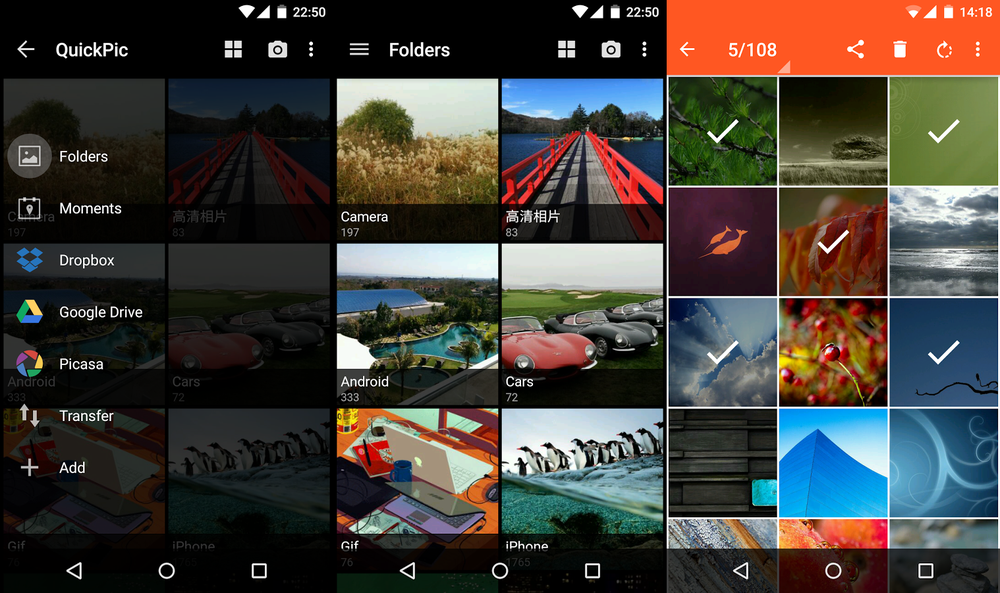

angularmaterial
A simple introduction
angularjs
HTML is good for declaring static documents, but it falters when declaring dynamic views. Angular.js extends HTML with new attributes and is perfect for Single Page Applications.
And the basics are pretty easy to learn.
✌
materialdesign
A design language developed by Google, material design is a guide for visual, motion, and interaction design across platforms and devices.
That basically means more responsive (and prettier) elements, and many cool animations and effects.
Google Inbox

QuickPic

Material is the metaphor
Bold, graphic, intentional
Motion provides meaning
angularmaterial
Put one and two together...
And you get...
Material Design in Angular.js!
Let's get started!
Installation
angularjs
angular material
Data binding
Angular.js creates live templates as a view. This is very convenient as the view reflects dynamic changes any time the model is changed in the client.
Hello {{name}}
Demo!
Modules
Modules are the main way to define an Angular.js app.
Modules keep the global namespace clean and
also make it easy to share code between applications.
More importantly, having modules allow the application
to load different parts of the code in any order.
angular.module()
Two parameters are needed:
{String} Name of the module
{Array} List of dependencies
// Defining the module
angular.module('myApp', []);// Getting the module
angular.module('myApp');Scopes
Scopes are a core fundamental of any Angular app and are used all over the framework.
Definition
Business functionality of the application
Methods in controllers
Properties in views
Glue
between the controller and view
Source of truth
for application state
All properties found on the $scope object is automatically accessible to the view
Controllers
Controllers exist to augment the view, adding functionality to the scope of the view.
Controllers create new scopes
Controller as
Using Controller-as syntax removes the need to inject $scope.Demo!
Directives
Directives are Angular's way of creating new HTML elements that have their own custom functionality.
Angular directives
Usually with prefix ng-.
ng-app: Initialises an Angular application
ng-init: Initialises the application data
ng-model: Binds the value to application data
Demo!
Creating custom directives
Angular compiles the HTML code we write and invokes it as a directive.
Demo!
Click me! Using replace: true
Click me!Formats
There are four declaration formats:
Element
Attribute
Class
Comment
restrict: E
restrict: A
restrict: C
restrict: M
Passing data into directives
Attributes can be declared for our custom directive. These attributes are set on the inner scope of our custom directive.
Demo!
Binding strategies
Angular gives three ways to bind data from outside the directive scope to the isolate scope inside the directive.
Local scope property
scope: {
// Binds a String to the value of the DOM attribute
myAttr: '@'
}Bi-directional property
scope: {
// Binds the parent property with the local property
myProperty: '='
}Parent execution binding
scope: {
// To execute a function in the parent scope
myFunc: '&'
}Simple angularjs app
This simple ToDoList app illustrates the basic usage of a controller and directive.
Demo!
Angular directives used:
ng-app | ng-controller | ng-if | ng-model |
ng-click | ng-repeat | ng-show
Controller created: toDoListController
This controller initialises the ToDoList with three items and creates some functions to get the relevant information.
Directive created: toDoListItem
This directive is the view for each item in the ToDoList, which includes a checkbox and the ToDo description.
This looks ugly...
Let's bring in angularmaterial!
angularmaterial uses custom directives
Usually with prefix md-.